Logistic regression
Source:vignettes/articles/GLM_LOGISTIC_REGRESSION.rmd
GLM_LOGISTIC_REGRESSION.rmdDescription
This shows the output of logistic regression functions from the
package rwf. The functions include the logistic response function, a
plot of a fitted logistic model against its predictors, a
likelihood-ratio test for comparing nested models, and a full diagnostic
report (report_logistic) covering pseudo-R², coefficients,
residual diagnostics, and confusion-matrix-based classification
performance.
Installation instructions for rwf can be found here
The code can be found here
Theoretical Background
The logistic function
Logistic regression models the probability of a binary outcome as
P(y=1\mid x) = \frac{1}{1+e^{-(\beta_0+\beta_1 x)}}
which maps any real-valued linear predictor onto the (0,1) probability range via the S-shaped logistic curve.
Maximum likelihood, deviance, and pseudo-R²
Unlike OLS regression, logistic regression coefficients are found by maximum likelihood — the coefficients that make the observed 0/1 outcomes most probable. Deviance (-2 \times log-likelihood) plays the role that residual sum of squares plays in OLS; it follows a \chi^2 distribution and can be tested for significance.
Because there’s no single, universally agreed-upon R^2 for logistic regression (unlike OLS, where R^2 has one unambiguous definition), several pseudo-R^2 measures exist, all comparing the fitted model’s deviance to the null (intercept-only) model’s deviance:
- Hosmer-Lemeshow R^2_L: 1 - \text{deviance}_{model}/\text{deviance}_{null} — the proportional reduction in deviance.
- Cox and Snell R^2_{CS}: based on the likelihood ratio, but capped below 1 even for a perfect model.
- Nagelkerke R^2_N: a rescaling of Cox & Snell that stretches it to reach a true maximum of 1.
The likelihood-ratio test
To test whether an additional predictor (or set of predictors) significantly improves a model, compare the deviance of two nested models:
X^2 = \text{deviance}_{smaller} - \text{deviance}_{larger} \sim \chi^2_{df}
with degrees of freedom equal to the difference in the number of parameters between the two models. A significant result means the larger model fits significantly better than the smaller one.
The Logistic Function
x <- -10:10
plot(x, compute_y_logistic(intercept = 0, coefficient = 1, x = x), type = "l",
xlab = "x", ylab = "P(y=1)", main = "Logistic function (intercept=0, coefficient=1)")
grid()
abline(h = .5, lty = 2)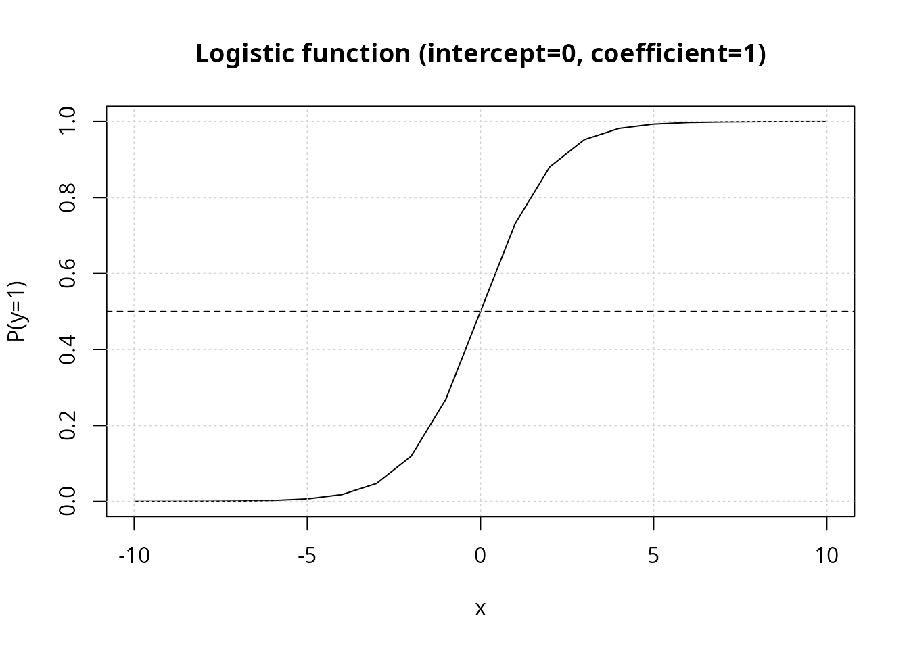
The curve crosses P=0.5 exactly at
x=-\text{intercept}/\text{coefficient}
(here, x=0); larger
coefficient values make the transition steeper.
Plotting a Fitted Model
plot_logistic_model overlays a fitted logistic curve for
every predictor in a data frame against a single binary outcome, letting
you compare how strongly each predictor separates the two outcome
classes.
set.seed(12345)
df <- data.frame(
outcome = c(rep(1, 10), rep(0, 10)),
pd1 = c(rep(1, 11), rep(0, 9)),
pd2 = c(rep(1, 9), rep(0, 11)),
pc1 = c(rnorm(10, mean = 5), rnorm(10, mean = 10)),
pc2 = c(rnorm(10, mean = 5), rnorm(10, mean = 20))
)
plot_logistic_model(df = df, base_size = 15)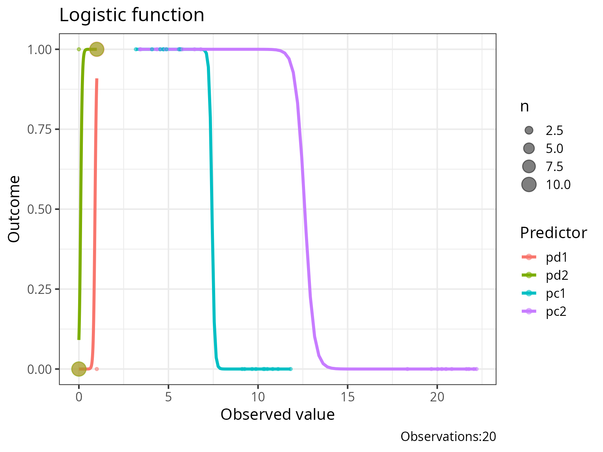
pc2 separates the two outcome groups far more sharply
than pc1 (means 5 vs. 20, rather than 5 vs. 10) — its
fitted curve accordingly rises more steeply, visually previewing that it
will be the stronger predictor once modeled formally.
Comparing Nested Models
output_compare_model_logistic runs the likelihood-ratio
test described above between two fitted glm models.
modelcategoricalpredictor <- glm(case ~ education, data = infert, family = binomial)
modelcontinuouspredictor <- glm(case ~ age, data = infert, family = binomial)
modeltwopredictors <- glm(case ~ education * age, data = infert, family = binomial)
anova(modelcategoricalpredictor, modelcontinuouspredictor)## Analysis of Deviance Table
##
## Model 1: case ~ education
## Model 2: case ~ age
## Resid. Df Resid. Dev Df Deviance Pr(>Chi)
## 1 245 316.17
## 2 246 316.17 -1 0.00080113
output_compare_model_logistic(model1 = modelcategoricalpredictor, model2 = modeltwopredictors)## X.2 df p
## 1 0.01543896 3 0.9994922
output_compare_model_logistic(model1 = modelcontinuouspredictor, model2 = modeltwopredictors)## X.2 df p
## 1 0.01463783 4 0.9999733
output_compare_model_logistic(model1 = modelcontinuouspredictor, model2 = modelcategoricalpredictor)## X.2 df p
## 1 -0.0008011253 1 1Note the last comparison: model1 and model2
here are not nested (education and
age are different, non-overlapping predictor sets) — the
likelihood-ratio test’s \chi^2
approximation is only valid for nested models, so a non-nested
comparison like this one should not be interpreted as a formal
significance test, only as a raw deviance difference.
Full Model Report
report_logistic runs the model through a comprehensive
diagnostic pipeline: pseudo-R^2,
coefficient table, residual/influence diagnostics, VIF, and
confusion-matrix-based classification performance (with an optimal
cut-point search).
model_simple <- glm(case ~ education, data = infert, family = binomial)
model_two <- glm(case ~ education + stratum, data = infert, family = binomial)
result_simple <- report_logistic(model = model_simple)

result_two <- report_logistic(model = model_two)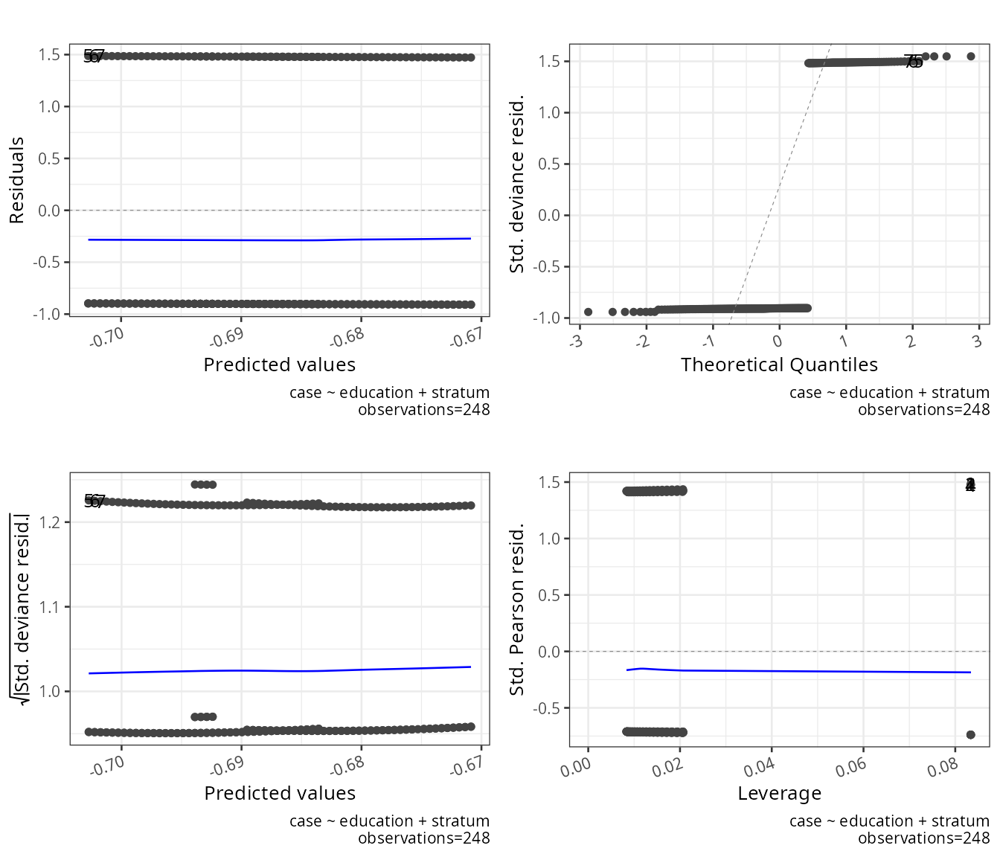
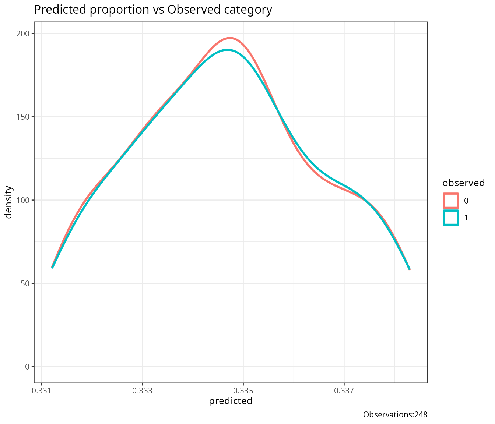
result_simple$result_X2_logistic## NULL
result_simple$result_R2_logistic## NULL
result_simple$coefficients## NULL
result_two$VIF## NULL-
result_X2_logistic: the omnibus test of the full model against the null (intercept-only) model — analogous to the F-test in OLS regression. -
result_R2_logistic: all three pseudo-R^2 measures side by side. -
coefficients: standardglmcoefficient table (estimate, SE, z, p). -
VIF: only populated when the model has more than one predictor — flags multicollinearity among predictors (values above 10 are conventionally considered problematic).
Validation on held-out data
report_logistic accepts a validation_data
argument to evaluate classification performance on data the model wasn’t
fit to, rather than on its own training data (which otherwise gives an
optimistic, resubstitution estimate of accuracy):
result_validated <- report_logistic(model = model_simple, validation_data = infert)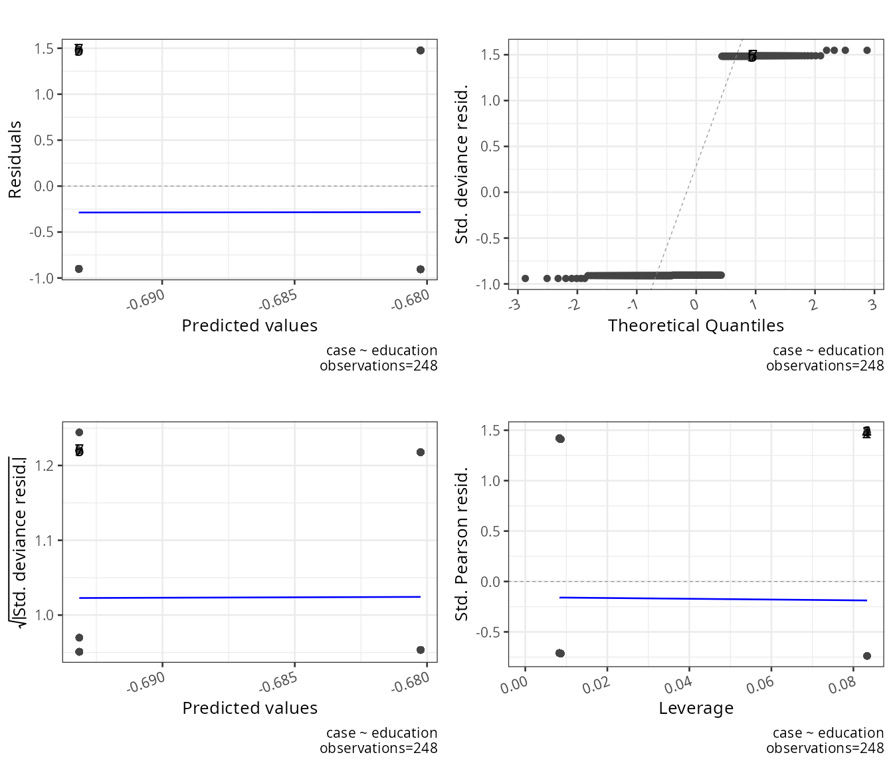
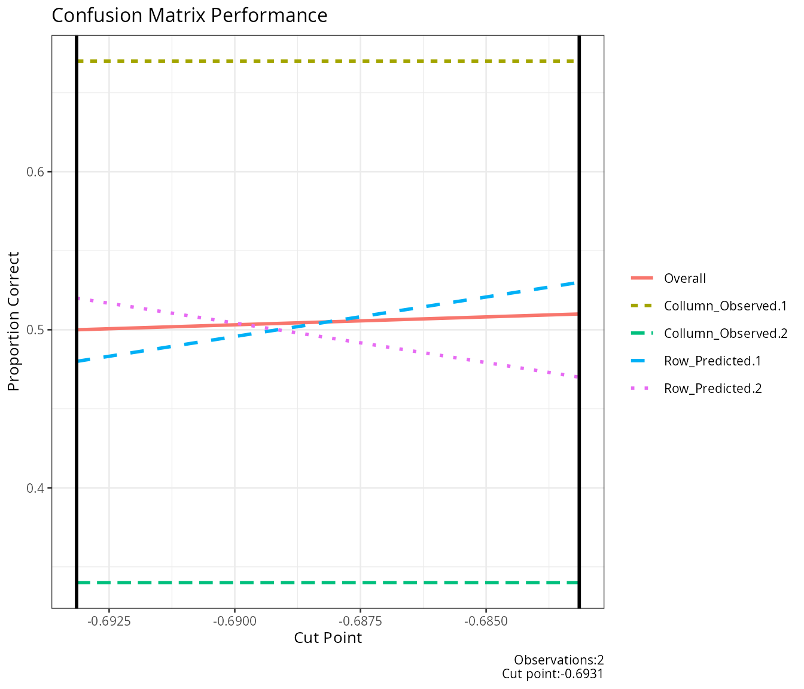
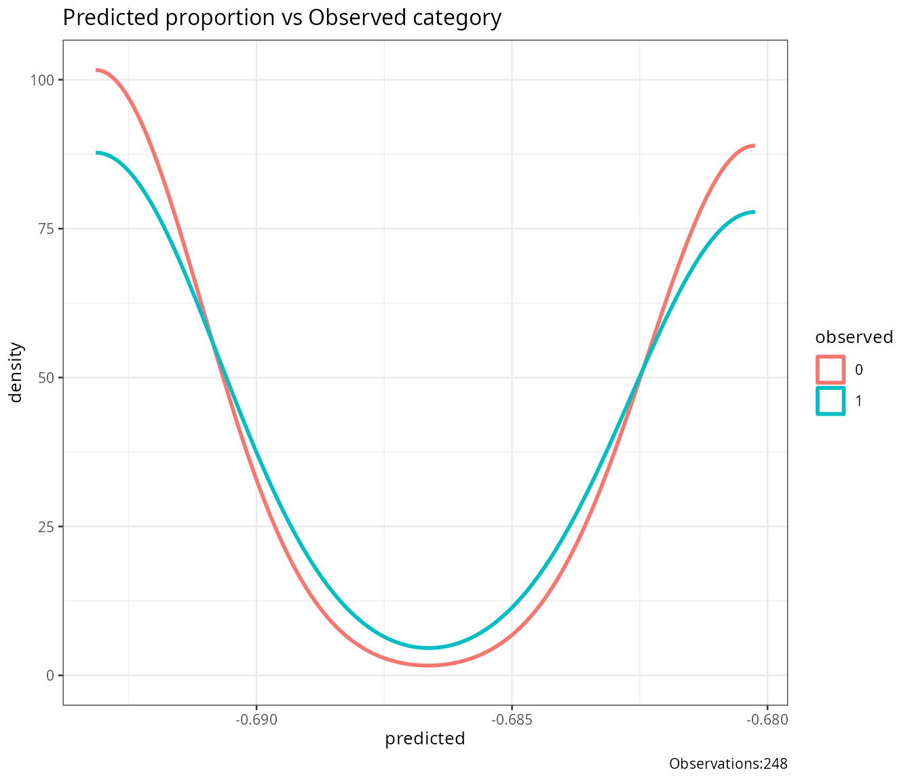
result_validated$score_descriptives## NULLFamily Robustness
Because report_logistic operates on the generic
glm object, it works across GLM families beyond binomial —
though pseudo-R^2 and the
confusion-matrix performance metrics are only meaningful for binary
outcomes:
model_gaussian <- glm(case ~ education, data = infert, family = gaussian)
model_poisson <- glm(case ~ education, data = infert, family = poisson)
result_gaussian <- report_logistic(model = model_gaussian)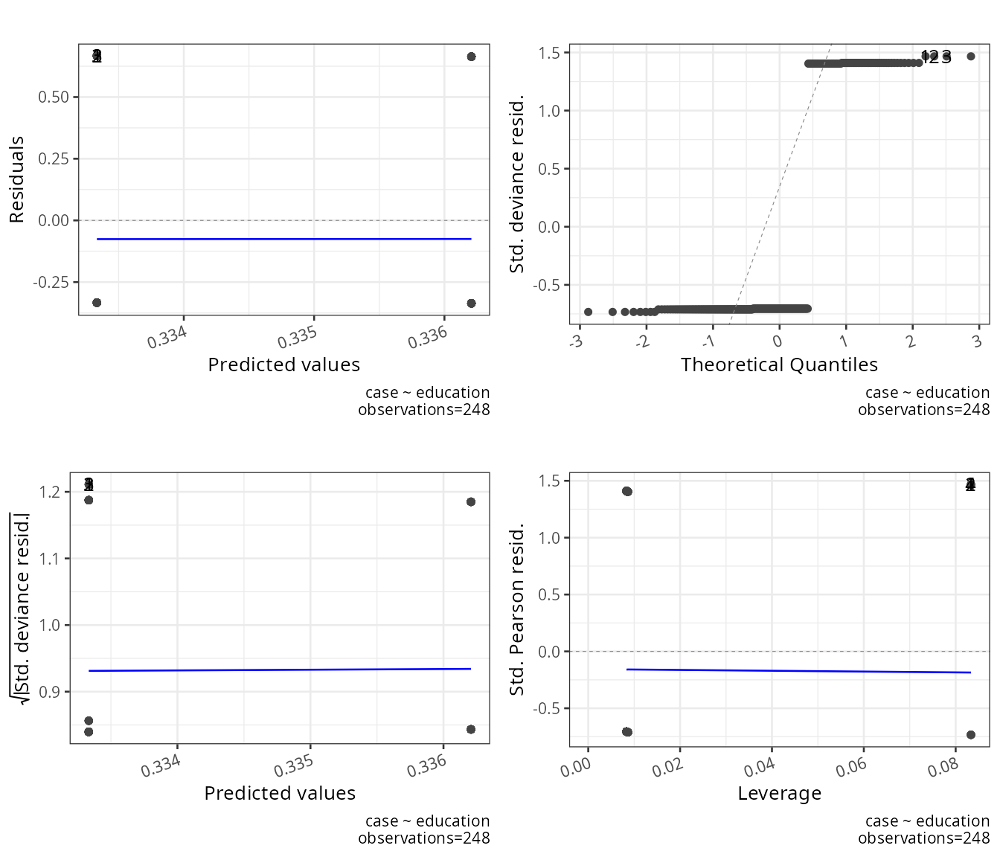
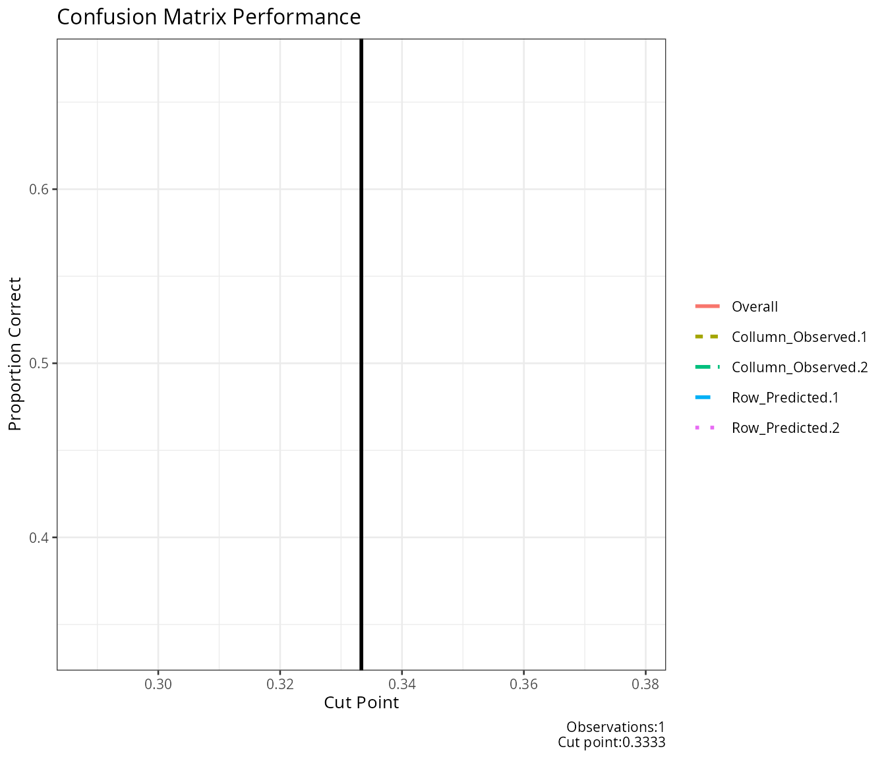
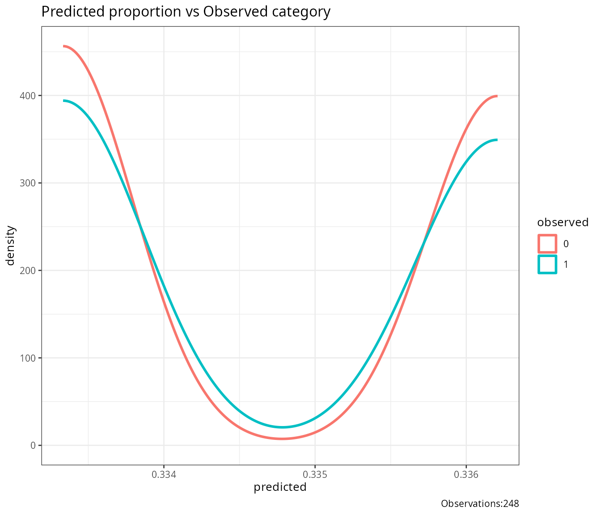
result_poisson <- report_logistic(model = model_poisson)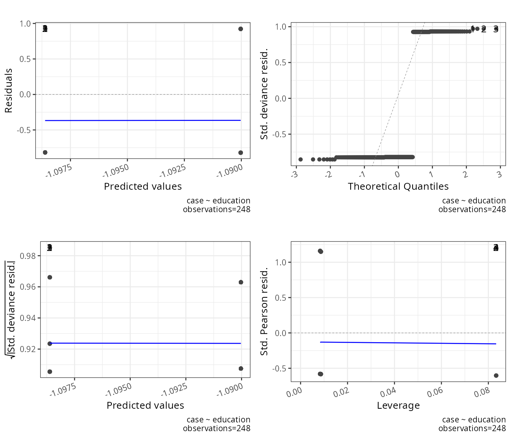
result_gaussian$logistic_output## NULL
result_poisson$logistic_output## NULLConclusion
compute_y_logistic and plot_logistic_model
make the shape of the fitted response curve visible and comparable
across predictors; output_compare_model_logistic formalizes
whether adding predictors significantly improves fit (for genuinely
nested models); and report_logistic bundles pseudo-R^2, coefficients, influence diagnostics, and
out-of-sample classification performance into a single report suitable
for a full model write-up.
Rendered with R 4.6.1